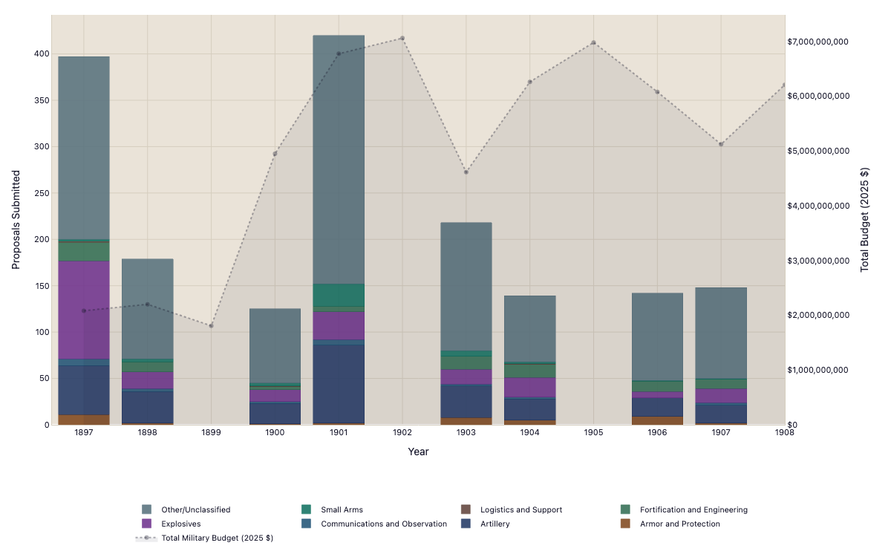
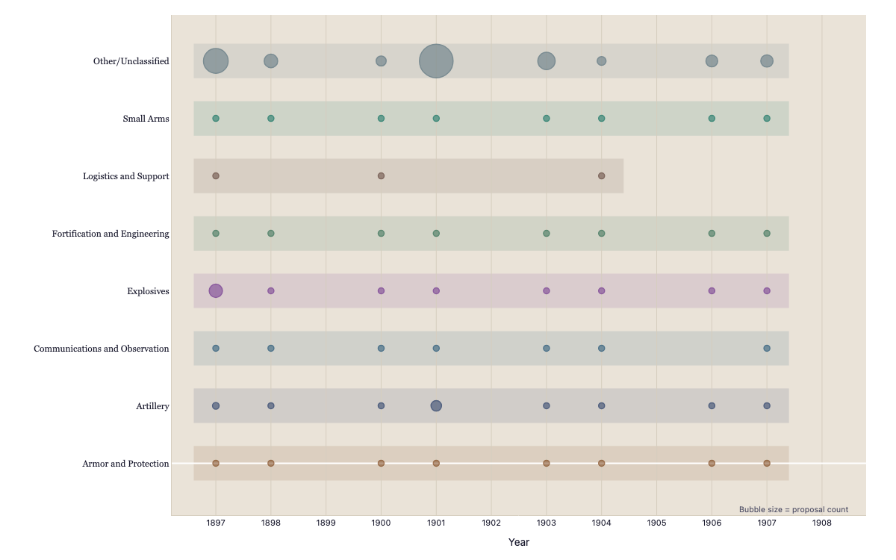
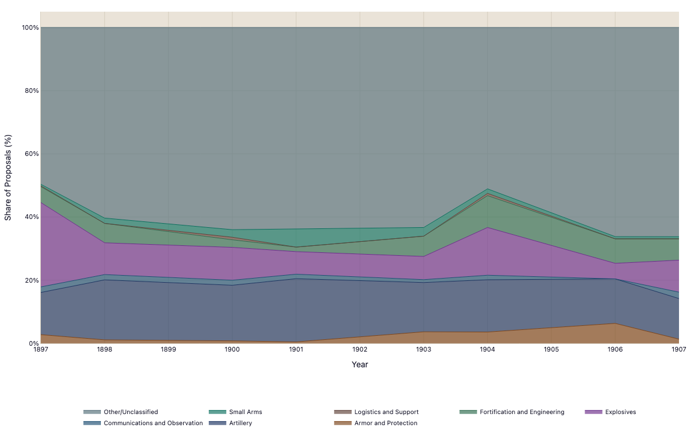
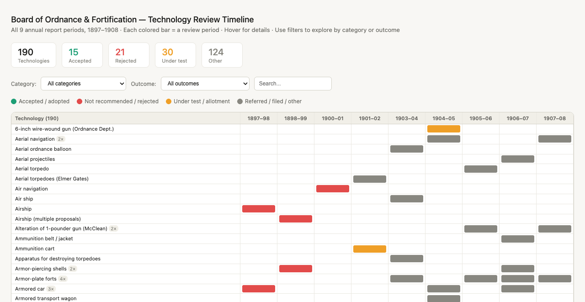
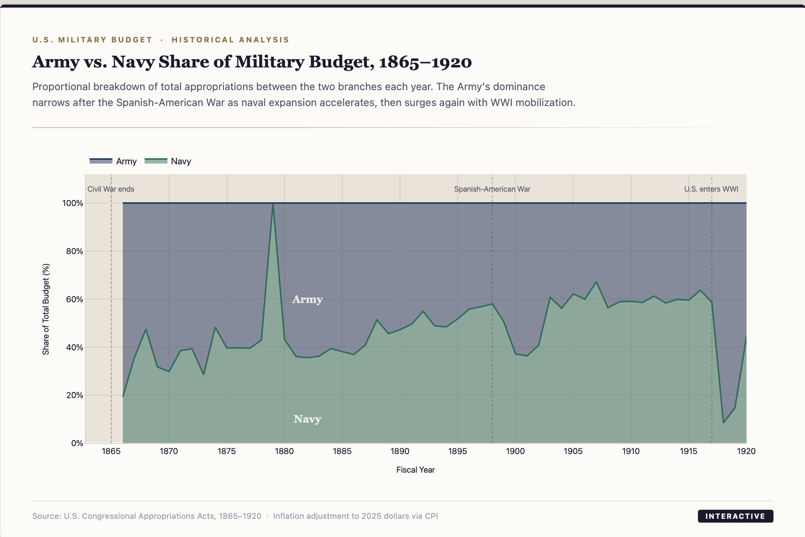
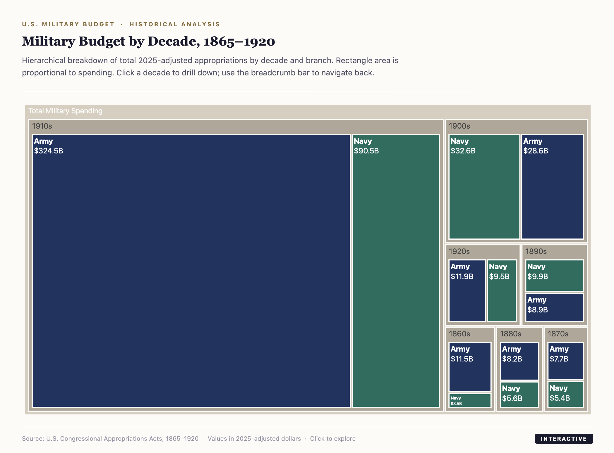
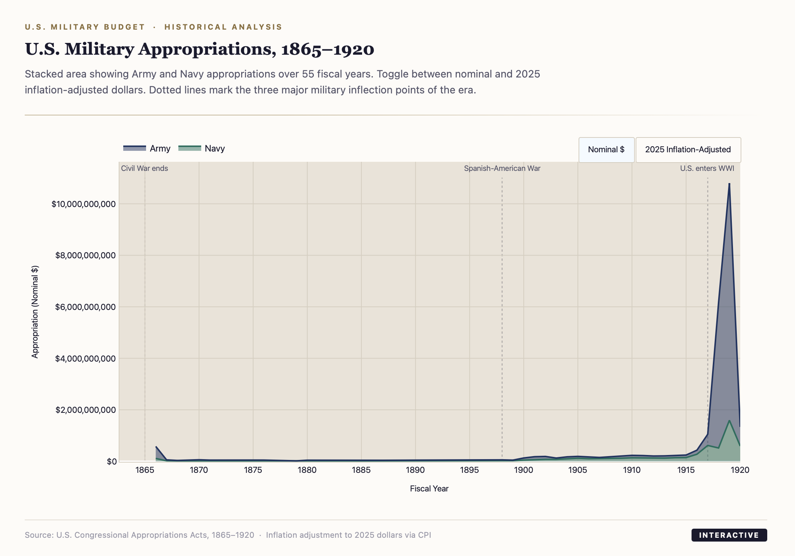
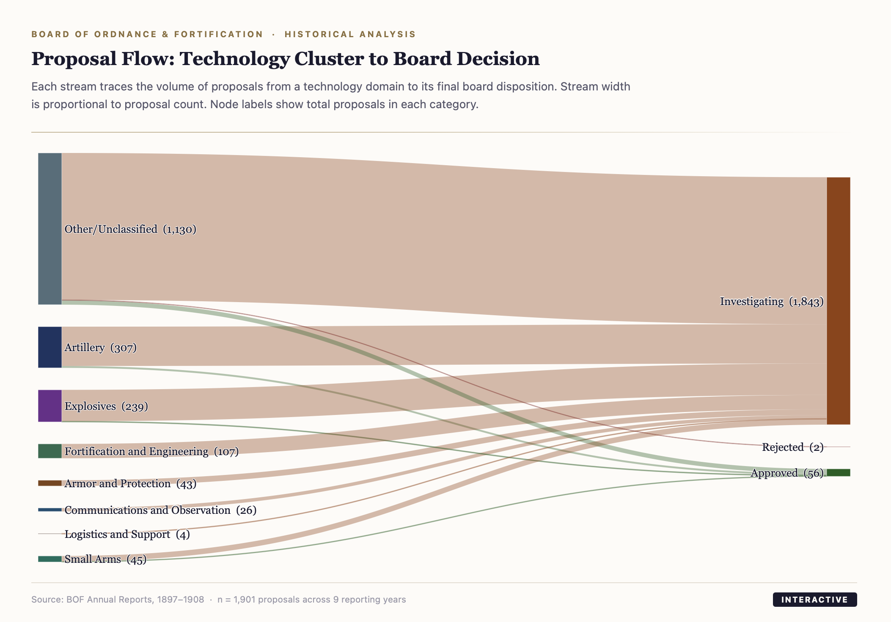
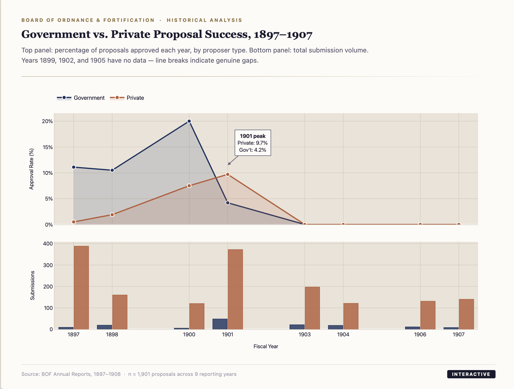
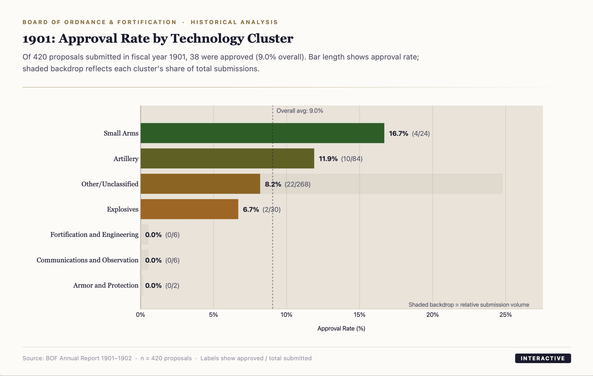

Proposal volume by technology cluster overlaid on total military budget — did more funding drive more innovation?

When each technology cluster was active, with bubble size showing proposal volume and hover for approval rates.

How the Board's attention shifted across technology categories over the full reporting period.

Every technology reviewed across all 9 report periods, color-coded by outcome. Filter by category, outcome, or search.

Army and Navy spending across 55 fiscal years, with toggle for inflation-adjusted values.

Hierarchical view of spending — rectangle area proportional to total. Click to drill into a decade.

How funding shifted between branches — Army dominance, naval expansion after 1898, and the WWI surge.

How proposals moved from technology domain to board decision — approved, rejected, or investigating.

Approval rate trends and submission volumes compared between government and private proposals.

Of 420 proposals in 1901, which technology categories had the highest board approval rates.